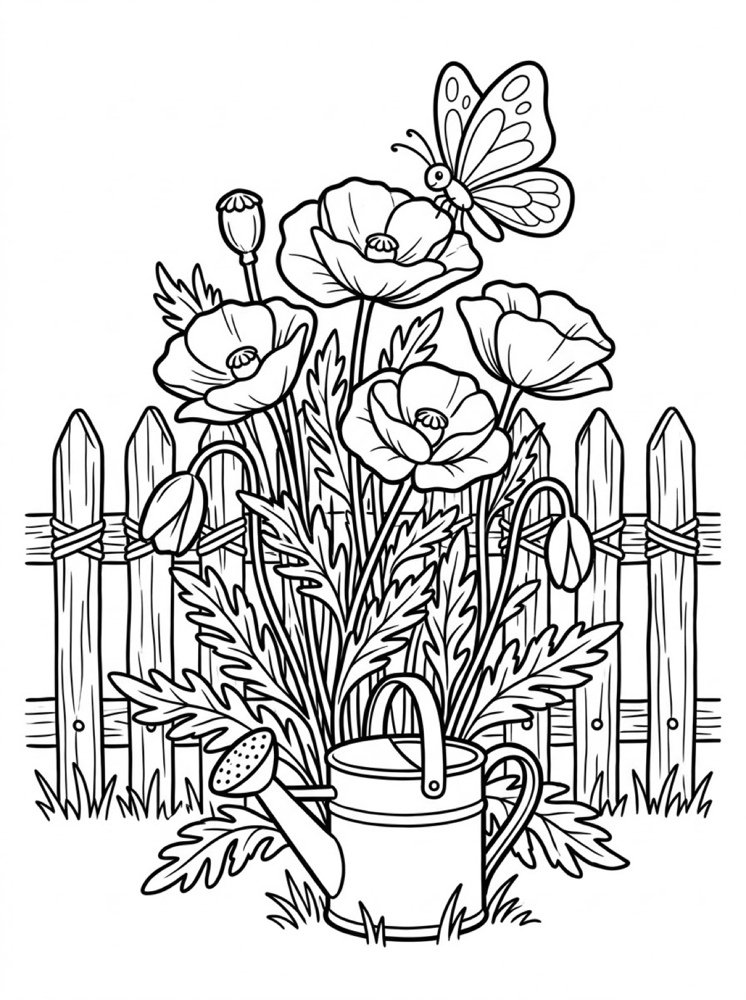
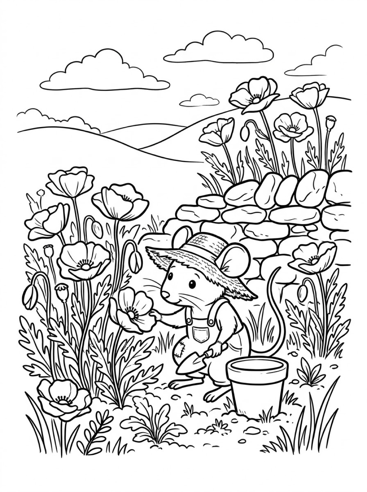
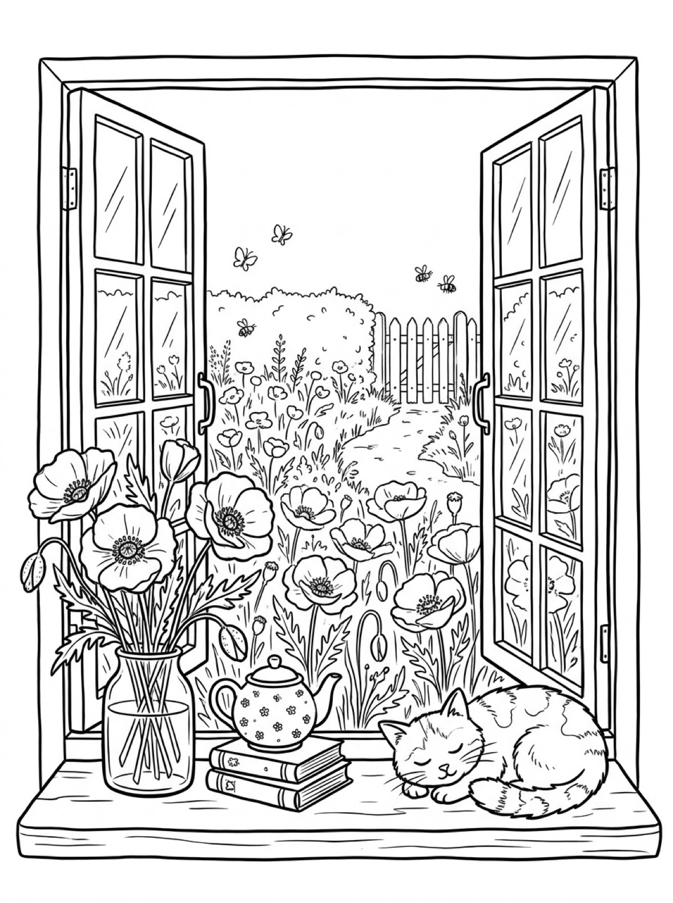

Free Poppy Coloring Pages Garden Fence, Mouse Gardener & Cottage Window Printables
These free poppy coloring pages give your child three storybook garden scenes to color — tall poppies blooming beside a picket fence, a little mouse gardener hard at work, and a cottage window looking out over a whole poppy field. Download the set below, print at home on letter-size paper, and let the coloring fun begin. No signup needed.
Last updated: October 21, 2026
Quick Answer
Yes — this page has three free printable poppy coloring pages: tall poppies in bloom beside a rope-tied garden fence, a mouse gardener tending poppies by an old stone wall, and an open cottage window with a jar of cut poppies, a teapot, and a sleeping cat above a field of flowers. Bold outlines and big spaces, made for little hands. Download, print on letter-size paper, and hand over the crayons — no signup, no cost.
At a Glance
- Ages: 3–8
- Pages: 3 free printables
- Format: Print at home, letter size
- Cost: Free, no signup
- Supplies: Crayons or markers
- Time: 10–20 minutes
🌺 Poppies by the Garden Fence Coloring Page

🎨 Download Your Free Poppy Fence Coloring Page
Four tall poppies in full bloom beside a rope-tied picket fence, with nodding buds, a round seed pod and a watering can at their feet — bold outlines, big spaces, zero signup.
⬇️ Download Free Poppy Page 🖨️ Print Poppy Page
🎁 Free printable for preschoolers & kids
🌺 Mouse Gardener and the Poppies Coloring Page

🎨 Download Your Free Mouse Gardener Coloring Page
A little mouse in a straw hat and patched overalls, trowel in one paw and the other resting on a bloom, with poppies spilling over an old stone wall — bold outlines, big spaces, zero signup.
⬇️ Download Free Mouse Gardener Page 🖨️ Print Mouse Gardener Page
🎁 Free printable for preschoolers & kids
🌺 Cottage Window Poppy Field Coloring Page

🎨 Download Your Free Cottage Window Coloring Page
An open cottage window over a field of poppies, with a jar of cut flowers, a flower-dotted teapot on a stack of books and a cat asleep in the sun on the sill — bold outlines, big spaces, zero signup.
⬇️ Download Free Cottage Window Page 🖨️ Print Cottage Window Page
🎁 Free printable for preschoolers & kids
More Coloring Pages
Tap any picture to open its theme page and download the free printable.
🌺 How To Use This Page
- Browse the three designs and pick the poppy scene your child will love most.
- Tap download or print under that design — the file opens full-size, ready for letter-size paper.
- Print a couple of copies so your child can try the same poppies in different colors.
- Color together with crayons or markers and display the favorites.
🌺 Why Kids Love Poppy Coloring Pages
Poppies are made for coloring. Their petals are big, papery fans with lots of open space inside, so even a brand-new colorer can fill one in and feel proud of the result. Every design on this page wraps those flowers into a little garden story — a fence-side flower bed, a mouse with a job to do, a window with a view — so kids are not just filling shapes, they are deciding what kind of day it is in the picture.
That freedom is what makes poppy pages so repeatable. Print the same design twice and it never comes out the same — the classic move is red petals with dark centers, but real poppies also grow in pink, orange, white and purple, so a rainbow flower bed is honestly accurate. Kids practice grip, pressure and color planning while they work, and because every version is “right,” there is no frustration when a crayon slips outside the lines. Poppies are also the red remembrance flower — many people wear a poppy in November to remember soldiers — so a page colored in classic red can double as a thoughtful card or window display.
🌺 Meet the Three Poppy Scenes on This Page
The poppies by the garden fence. Four tall poppies stand in full bloom beside a rustic picket fence tied with rope, their feathery leaves filling the bed below. Look closely and you will find the whole life of the plant on one page: nodding buds still closed, a round seed pod left over from an earlier flower, and a butterfly resting on the top bloom. A watering can sits at the base, ready for work. The blooms themselves are the biggest, boldest shapes in the set, which makes this the best starting page for younger colorers, while the fence slats and leaves give older kids plenty to finish.
The mouse gardener. A little mouse in a straw hat and patched overalls kneels in the flower bed, a trowel in one paw and the other resting gently on a poppy, as if checking on a friend. Poppies grow on both sides and spill over the top of the dry stone wall behind, an empty flowerpot waits beside the mouse for whatever gets planted next, and rolling hills and soft clouds stretch out behind. It is the sweetest page in the set for kids who love animals, and the stones in the wall are a satisfying pattern to color one by one.
The cottage window. Open cottage windows frame a whole field of poppies, with a winding path, a picket gate, and bees and butterflies drifting over the flowers. Inside on the sunny sill, someone has already brought the garden in: a jar of cut poppies, a small flower-dotted teapot resting on two stacked books, and a cat curled up fast asleep in the warmth. This is the most detailed design — a whole field of smaller blooms beyond the big ones in the jar — and it rewards careful coloring and patience.
✏️ Poppy Coloring Tips
- Start with the petals. Classic poppy red is always a winner, but pink, orange, white and purple poppies are real too — let your child pick a color story for the whole flower bed.
- Give the centers a contrast. A dark middle — deep purple, brown or black — makes light petals pop off the page, and it is the fastest way to make a finished sheet look “real.”
- Use short strokes for texture. Scribbly short lines suit the wooden fence and the stone wall, while long smooth strokes suit petals and the cat's fur.
- Name the colors out loud. “You chose orange for the mouse's poppies!” builds color words and keeps little colorers engaged for longer.
- Display the finished page. A favorite sheet on the fridge or bedroom door is the fastest way to get asked for the next one.
🌺 Coloring Pages for Different Ages
For ages 3 to 4, start with the poppies by the garden fence. The four blooms are big central shapes with bold outlines, so little hands can fill a whole petal without worrying about the background. Scribbling is fine at this age — they are learning how crayons move across the page and how hard to press.
For ages 5 to 6, the mouse gardener is the sweet spot. The mouse is a friendly character to bring to life — hat, overalls and all — and the stone wall and surrounding blooms add real choices: which stones are gray, which are warm brown, and what color is the empty pot going to be?
For ages 7 to 8, hand over the cottage window. It carries the most detail — a whole field of poppies, window panes, the teapot's tiny flower pattern, and a sleeping cat — and rewards careful coloring and patience. Older kids often spend the longest on this one.
🌺 More Garden Fun After Coloring
After coloring, ask your child to tell you the garden's story. What is the mouse gardener planting in the empty pot? Who lives in the cottage, and is the cat dreaming about the butterflies? Write their answers on the back of the page (or let them dictate while you write) and the sheet becomes a keepsake instead of a throwaway.
Keep the garden theme going with the bunny coloring pages — another flower garden, this time with a bunny in it — or trade the sunny window for a rainy-day one with the cozy coloring pages. And the cottage itself has company in the house coloring pages, if your child wants to color the whole neighborhood.
🔗 More Free Printables You’ll Love
- Free Bunny Coloring Pages A carrot-basket bunny in a flower garden, a bunny family at their burrow, and an orchard visit.
- Free Cozy Coloring Pages A rainy-day reading nook, fireside knitting, and a snowy cabin window to color.
- Free House Coloring Pages More storybook houses and cottages to print and color at home.
- All Free Coloring Pages Browse every free coloring page on the site, organized by theme.
❓ Poppy Coloring Pages FAQ
Are these poppy coloring pages really free?
Yes — all three designs on this page are free original printables from MomYouNeedThis. Download them, print them at home, and color — no signup and no cost.
What ages are these coloring pages best for?
Kids ages 3 to 8 get the most from this set. Younger children can start with the big poppies by the garden fence and color the main shapes, while older kids enjoy the detailed cottage window scene and the mouse gardener's stone wall.
Which of these poppy coloring pages is easiest for toddlers?
The poppies by the garden fence. Its four blooms are the biggest shapes in the set, with wide-open petals and a simple fence behind them, so little hands can color happily without worrying about small details.
How do I print a coloring page?
Tap the download button under the design you want, then print the file on regular letter-size paper. The print button opens the full-size page in a new tab if you prefer to print from there.
Can I make a coloring book from these pages?
Yes — print all three designs, stack them in order, and staple along the left edge. Add a cover sheet with your child's name on it for a finished homemade poppy coloring book.